Loop Engineering 怎么落地？一条从 0 到 1 的上手路径
大家好，我是小林。
上次那篇讲 loop engineering 是什么 的文章发出来，评论区问得最多的就一句：「道理我懂了，可到底怎么动手？」
说实话，这问题问到点子上了。概念听着热血，真自己上手，全是细节，一个都绕不过去。
刚好，X 上有个叫 Codez 的博主，前阵子发了份《Loop Engineering 实操手册》，近四百万人看过。他开头那句话挺扎心：十个开发者，九个到现在都没写过一个能替自己 prompt 的 loop。
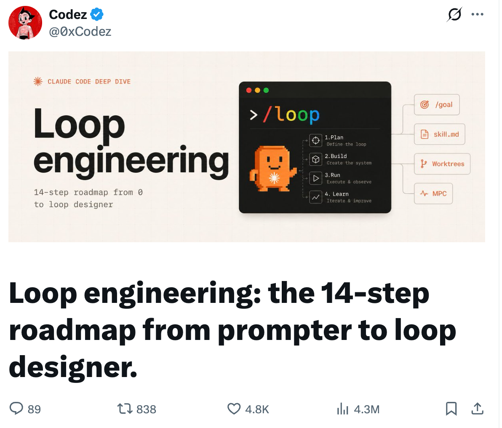
我把这份手册从头到尾啃了一遍，挑出真正能落地的，掰开揉碎讲给你听。
废话不多说，发车。
先别急，你真需要 loop 吗？
看完概念，你手可能已经痒了，想立马开一个 loop 让它替你打工。
别急着上手。
loop 这东西不是白来的。它烧 token、要花时间搭，真出了岔子，你还得去 debug 一个自己压根没盯着它跑过的系统。说白了，你这是拿真金白银加时间，赌它将来能帮你赚回来。这笔赌划不划算，动手前我建议你拿几个问题，先把自己问一遍。
第一个，也最实在：这活你是不是每周都要干好几遍？要是一锤子买卖，老老实实写个好 prompt 更快更省，搭 loop 纯属杀鸡用牛刀。
第二个，我觉得是条生死线：有没有一个东西能自动告诉你「这活砸了」？测试也行，类型检查、linter、跑个构建也行，随便哪个能当裁判都成。没有这个裁判，loop 吐出来的东西你还得一行行读 diff 去验。那它到底替你省了啥？
第三个是钱：你的 token 预算扛得住浪费吗？loop 会反复读上下文、重试、试探，不出活也照样烧。预算紧的人，这笔空转烧得肉疼。
第四个：agent 能不能跑它自己写的代码？得有日志、能复现、崩在哪看得见。要不然它两眼一抹黑，自己都不知道刚闯了啥祸，根本没法自我修正。
这几个之外，还有个附加题，我觉得比上面都狠：你到底打算 review 它产出的东西吗？不打算？那别建，真的。
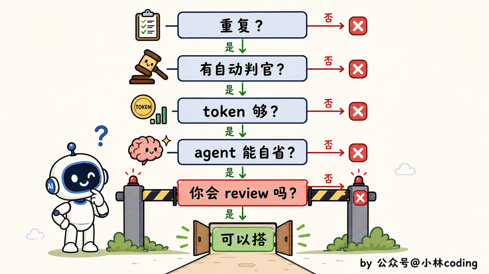
还得算笔不太中听的账。loop 这东西，说到底是偏向「花得起钱的人」的。
token 管够的人玩它觉得真香，背着消费套餐的人呢，跑个两轮可能就触顶了，要么月底收到一张吓人的账单。
所以一句可能不讨喜的大实话：loop 是真东西，但大部分人现在还用不上。这不是泼冷水，是帮你省下一次「搭了个寂寞」。
还有几类活，再馋也别碰：架构、鉴权、支付、生产部署，一出事就是大事，必须有人盯着。
至于哪些活适合拿来开张，下一节讲场景时一起说。
第一个 loop 该怎么搭？
上面这些都想清楚了，确实该搭。
这时候新手最容易犯的错，是一上来就想搭个无所不能的系统：自动化、并行、写查分离、连一堆外部工具，恨不得一步到位。
结果就是搭到一半被各种联调问题劝退，或者搭出来一个根本没法 debug 的庞然大物。
正确的姿势是反过来：先搭一个能跑起来的最小版，就四样东西。
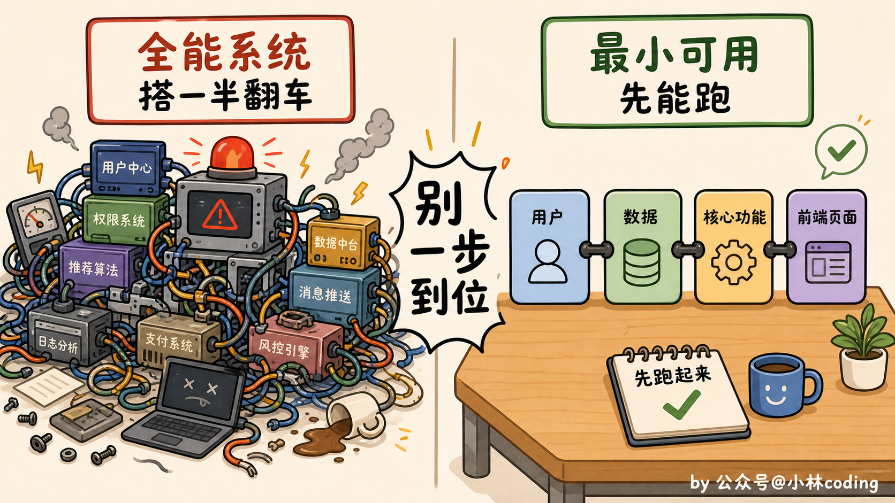
第一样，automation，也就是 loop 的心跳。按节奏自动触发，定时也行，某个事件也行。这里有条铁律千万别忘：停止条件一定要写死。不然 token 烧光了，它还在那傻乎乎兜圈子。
第二样，skill，把项目背景存下来。用什么框架、有什么约定、踩过哪些坑，统统写进一个 skill 文件丢仓库里，agent 每轮自己读，省得你一遍遍从头解释。
第三样，状态文件，专门记「做完了啥、下一步干啥」，好让明天的循环接得上今天。
为什么单把状态文件拎出来说？因为它是命根子。
agent 这东西，是个金鱼记忆。这次会话学到的，明天一重启就忘得干干净净。
我看到有句话点得特别透：agent 会忘，但 repo 不会。你把进度写进文件，loop 才接得上昨天，不然每天都是从头来过。
这文件放哪，看你情况。
最简单的办法，就是在仓库里放一个 STATE.md，跟代码一起管，改了还能 diff，谁打开都看得懂，个人或者小团队用这个就够了。
要是想更正式一点，就接到外部系统里，Linear（研发项目管理工具）、GitHub Issues、甚至一张数据库表都行，好处是能跨好几个仓库、随时能查，团队里每个人都看得到 loop 在做什么，正经上生产的 loop 更适合这么放。
它长什么样并不复杂，一个极简的 STATE.md 大概就这意思：
# STATE.md
## 进行中
- 升级 lodash 到 4.x，本地测试已过，等 CI
## 今天完成
- 修掉登录接口的空指针，已合并
## 卡住了，等人看
- 支付回调偶发超时，复现不稳定，先挂起
## 下一步
- 扫一遍本周新开的 issue，挑能自动改的
光有状态还不够。loop 跑久了容易跑偏，所以最好再放一个常驻的目标文件（VISION.md 或者 AGENTS.md），每轮开工前先让它读一遍。
你可以这么理解。状态文件记的是它现在做到哪了。目标文件不一样，管的是它最终要去哪。一个盯当下，一个盯方向。少了哪个，它都会跑着跑着就忘了自己在干嘛。
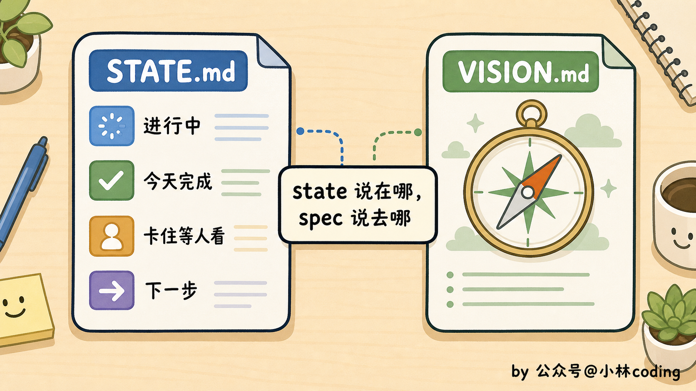
第四样，闸门，就是前面反复念叨的那个裁判：测试、类型检查、构建，过不了就直接拦下。这是 loop 唯一能挡住烂活的关卡。这道千万省不得。
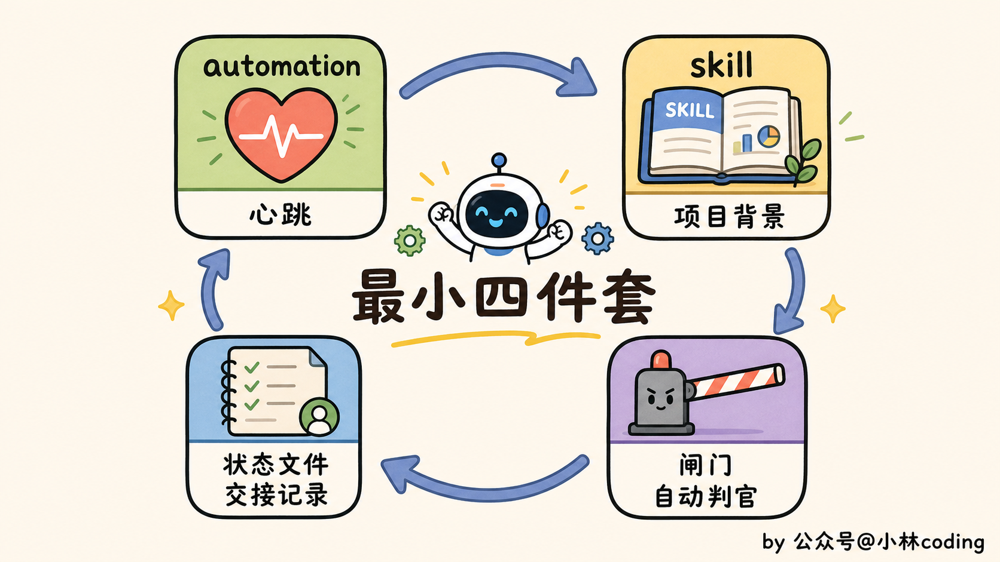
四样凑齐了，还有件事比凑齐零件更要命：顺序别搞反。
正确的走法是，先让一次手动运行稳稳跑通，再把背景沉淀成 skill，再包成 loop，最后才接上自动调度。一步稳了，再上下一步。
非要跳着来，手动都没跑顺就急吼吼上调度，回头出了岔子，你根本分不清是哪一环的锅。
先把路走稳。再谈自动。
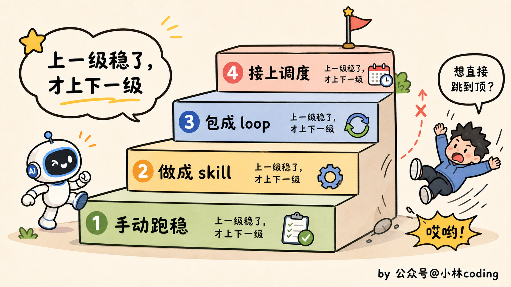
完整的 loop 还缺哪几块？
最小四件套能转起来，但它还很素，只能干最简单的活。想让它干得更多、更稳，就往上加。
一个完整的 loop，手册拆成五个构件，我先简单过一遍各是干嘛的：
- 自动化：loop 的心跳。最小版那个 automation 就是它，按时间或事件踢它一脚，它就跑一轮。
- worktree：多个 agent 一起干活时，各分一间独立工作区，免得它俩改同一个文件、打起来。
- skill：项目背景、约定、踩过的坑，全塞进文件，agent 每轮自己翻，不用你一遍遍念。
- connector：走 MCP 接上 GitHub、Slack、Jira 这些，loop 才能真去开 PR、发消息、查告警，而不是干瞪眼。
- sub-agent：写代码的和验收的，拆成两个 agent。别让同一个 agent 给自己的作业打分。
好在这五样，工具里基本都给你备好了，不用自己造轮子。
就拿 Claude Code 说：自动化是 /loop 配上桌面端定时任务和云端 Routines；worktree 直接内置；skill 就是个 SKILL.md 文件；connector 走 MCP。现成的零件，你把它们拼起来就完事。
这五个里，要我说，最该刻进脑子的是 sub-agent，也就是「写代码的和验收的分家」。
说个有点打脸的冷知识：这套「一个 agent 写、另一个 agent 挑刺」的玩法，听着特别 2026，其实 Anthropic 早在 2024 年底就写进工程博客了，叫 evaluator-optimizer。换个新名字，又火一遍。
道理特别朴素。让写代码的模型给自己的活打分？它准手下留情，跟学生自己批自己的卷子一个样。换一个干净上下文、带着不同指令的第二个 agent 来挑刺，才揪得出第一个它自己骗过自己的毛病。
loop 是在你不看的时候跑的。一个你真信得过的验证器，是你敢撒手走开的唯一底气。
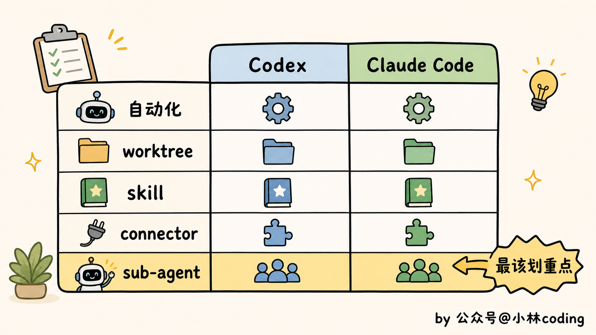
loop 到底能拿来干嘛？
光认识零件还不够，你得知道它们拼起来能替你干什么。
我把见过的、真能跑起来的 loop 场景，按从轻到重分了三档，你对号入座。
最轻的一档，盯自己手头的活。 这档不用搭什么系统，一条命令就行，适合所有人。
比如你提了个 PR 在等 CI，与其自己每隔几分钟切回去看一眼，不如一条命令丢给它：
/loop 10m 检查当前分支 PR 的 CI：有失败就去读日志、修掉、推送；全绿就停下来，给我一句话总结改了什么
这条命令拆开看就三段：开头的 10m 是心跳，每 10 分钟自己醒一次；中间那段是每轮要干的活；最后一句是停止条件加交差方式。敲下去你就能去忙别的，CI 挂了它自己修，全绿了再回来叫你。
把任务换一换，同一个 /loop 还能盯别的：
/loop 监控这次部署，跑完通知我
/loop 每天早上用 Slack 把我昨天被 @ 的消息汇总一下
注意第二条没写时间间隔，这时候节奏就交给模型自己定，它会按任务性质挑个合理的频率，不用你操心。
这些活的共同点是：本来得你时不时切回去瞄一眼，现在交给 loop，你专心干别的，它有事才喊你。
这里要分清两个命令，踩过坑的都懂。
/loop 是绑在当前会话上的，你关掉终端它就停了，适合「今天就盯这一件事」的临时轮询；想要那种你都睡了它还在云端跑、关了机也不耽误的，就得用 /schedule 这类把任务丢到云端的方式。
/loop 陪你白天忙活。/schedule 不一样，你下班、关了机，它还在云端接着替你盯。
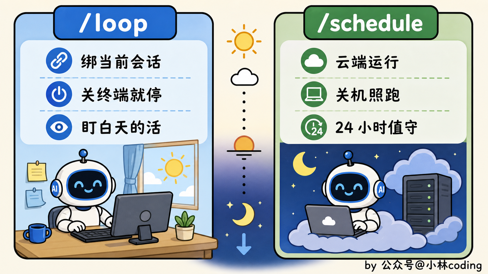
对了，/loop 还有个更聪明的兄弟叫 /goal，这俩的区别值得单独说一下。
普通的 /loop 是按固定节奏重复跑：每隔十分钟跑一轮，至于这轮干得对不对，它不管。而 /goal 是盯着一个你写好的条件跑，比如「所有测试都变绿」，条件不达成就一直跑，达成了才收手。
更妙的是，这个条件到底达没达成，不是干活的那个 agent 自己说了算，而是另派一个独立的小模型来判。你看，这又是一次「写的和验的分开」，连「我搞定了」这句话，都不让动手的 agent 自己下结论。
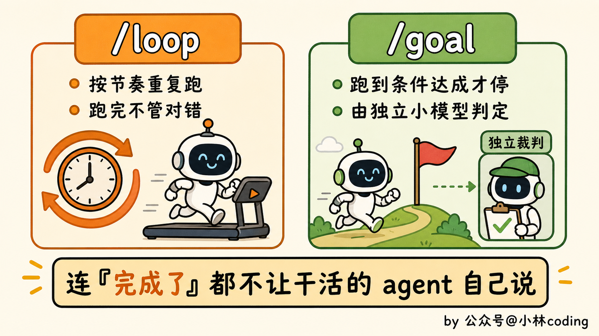
中间一档，每天定时帮你清理。 这档就得用上前面那些构件了，适合有点规模的项目。
最典型的是「晨间分诊」：每天早上自动跑一轮，读昨天挂掉的 CI、还开着的 issue、最近的提交，判断哪些值得处理，写进状态文件，能自己修的修掉提 PR，搞不定的丢进收件箱等你。
等于你每天到工位，活已经被分好类、好处理的那批甚至已经处理完了。
类似的还有定时修 CI（每天凌晨把红掉的流水线捞起来修）、依赖升级（定期查有没有新版本，升完跑测试，绿了才提 PR）。
我见过玩得猛的，一个人挂着 loop，一晚上给三十来个开源仓库自动开依赖升级 PR，早上起来挨个 review 就完事。
最重的一档，让 loop 自己接活、自己验活。 这档是给重度玩家的。
比如开源项目上，有人提了个 issue，loop 自动去读，对照项目的愿景文档判断这需求合不合方向，合的话直接起草一个 PR，还顺手让另一个 agent 先 review 一遍，再交到你面前。从「有人提需求」到「一个审过的 PR 草稿」，中间没你什么事。
到了这一档，有个让 loop 越跑越好的技巧值得单独说：内外两层循环。
内层那个 loop 负责干活，外层那个 loop 专门吸收你每次 review 时的反馈，拿去改进下一轮怎么干。
说白了，你每一次「这里改改」，都不只修了这一次，而是喂给了系统，让它下回别再犯。这才是把「设计 loop」的复利真正吃满。
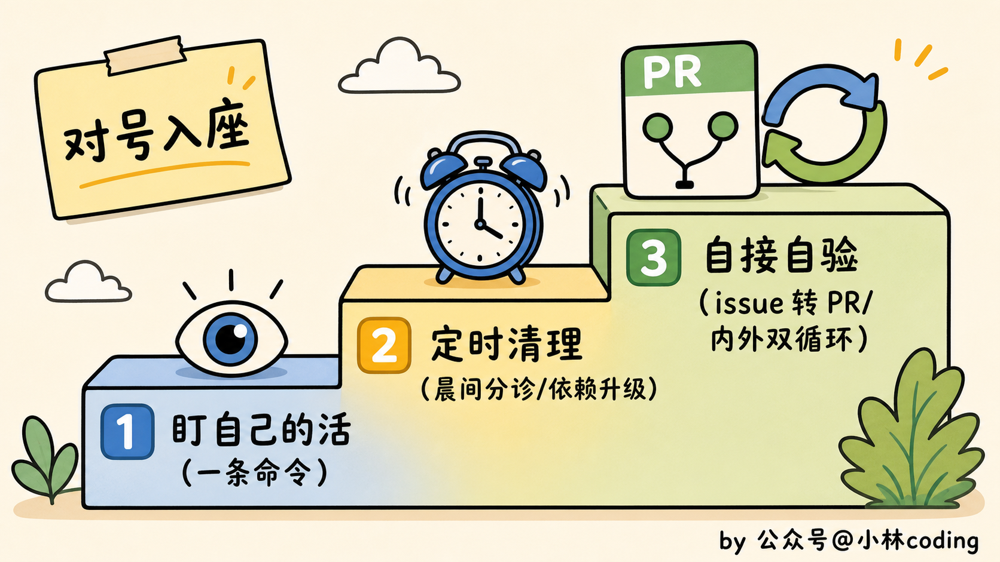
你的 loop 是赚是亏？
很多人搭完 loop 就傻乐，觉得进入了自动化时代，却没算过一笔账：这东西到底帮你赚了，还是在偷偷亏钱？
loop 不像写 prompt 对错当场可知，它长期运行、持续烧钱，赚亏得靠一个指标来盯。这个指标就一个：
每个被接受的改动，花了你多少成本。
把 loop 这阵子烧的 token、占的算力，加上你 review 花掉的时间，全算进去。再除以它真正被你合并了的改动数。得出来的，就是单位成本。这个数你得心里有底。
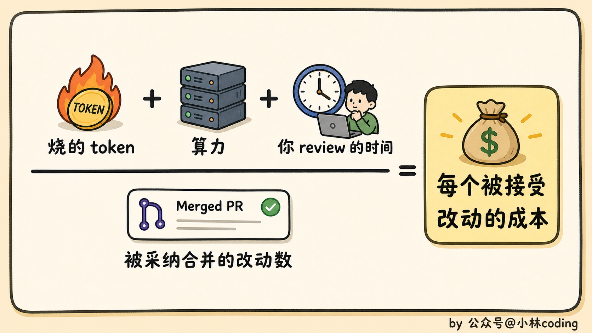
配套还有个特别简单的红线：如果接受率低于 50%，这个 loop 就在亏本。
意思是，它产出十个改动，你看完只有不到五个能用，剩下一多半要么被你打回要么直接扔。那它产出的「废品」消耗的 token 和你的审查精力，已经超过了它帮你省下的那点活。这种 loop，要么赶紧调，要么干脆关掉。
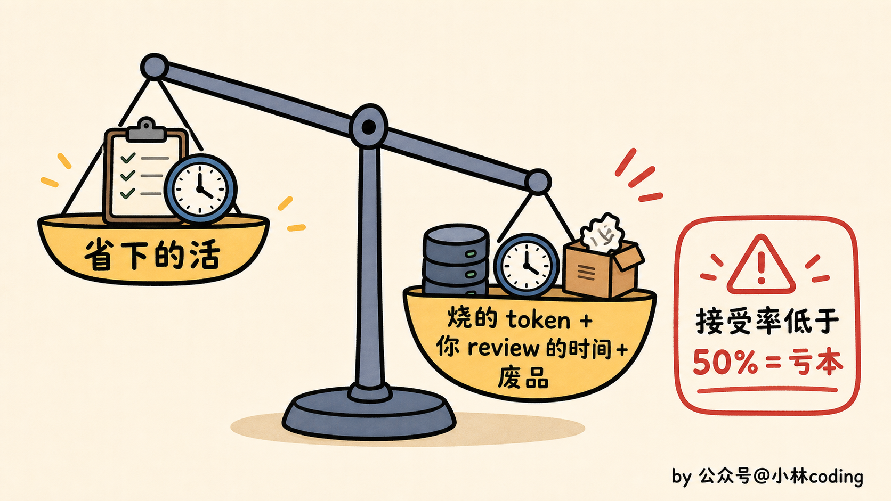
还有笔账顺带说一句：sub-agent 是按个烧钱的，你每多挂一个做检查的，就多花一份模型和工具的钱。
所以别处处都上双保险，「再请一个 agent 来挑刺」这件事，用在那种真正值得买个第二意见的地方就行。token 宽裕的人和精打细算的人，搭出来的 loop 会很不一样。
没人盯着，安全怎么办？
前面都在讲怎么让 loop 跑得好。最后这节，得讲讲怎么让它别给你惹祸。
loop 最大的卖点是无人值守，你睡觉它干活。但你把这句话反过来念一遍就该警觉了：它在你不看的时候替你干活，可同样在你不看的时候，它也敞着一个没人守的口子。
自动开 PR、自动装 skill、自动连外部工具，每一个口子都可能被人钻。
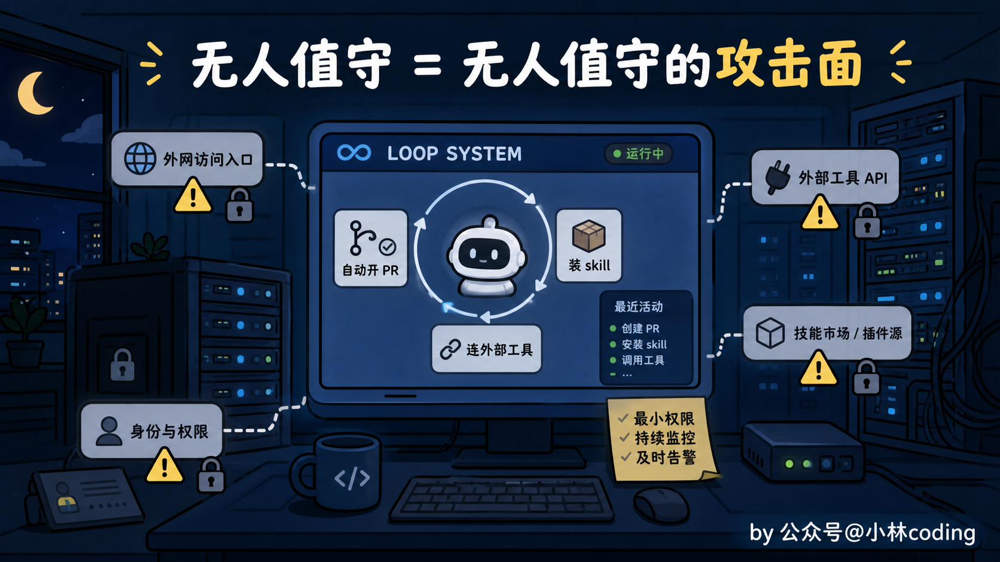
我给你拎四条红线，建议直接焊死在闸门里，一条都别松。
第一条，生成的代码没审就上线。闸门里光有测试和构建还不够，得再塞进 SAST（静态安全扫描）、依赖审计、密钥扫描。让安全检查跟功能检查一个待遇，都是上线前必须过的关。
第二条，也是我觉得最阴的一条：skill 本身就是个注入入口。你以为装个 skill，不就是多份说明书？能有多大风险？讲真，下面这个数据，我第一次看到的时候，手一抖。
今年 4 月有一篇 arXiv 上的实证研究（《Credential Leakage in LLM Agent Skills》），专门去扒社区里的 skill 安全问题。研究者从一个 skill 平台的十几万个 skill 里抽样了 17022 个来分析，结果发现其中 520 个会泄露凭证，总共揪出 1708 处问题。
更扎心的是泄露途径：占比最高的不是什么高深的攻击，而是 debug 日志，光是 print 和 console.log 这类把东西打到标准输出的操作，就造成了 73.5% 的泄露。而且这些泄露里，将近九成不需要任何权限就能被利用。
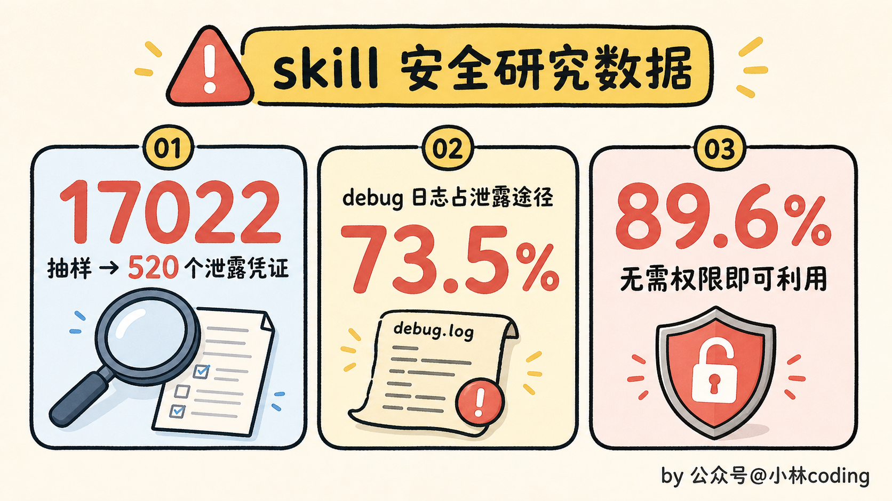
我之前写 claude code skills 那篇讲过，skill 是个装备齐全的工具箱，agent 能自己翻里面的脚本和资料。
可这话反过来一样成立。要是这工具箱里被人下了毒呢？agent 照样一声不吭、照单全收。这就跟你捡到一个来路不明的 U 盘，眼都不眨直接插进公司电脑，一个道理。所以任何 skill，在你的 loop 自动装它之前，先把源码从头到尾读一遍，别图省事直接挂上去。
第三条，凭证泄露进日志。正好接着上面那个数据说，既然 debug 日志是泄露的头号途径，那生产上跑的 loop，就把 verbose 日志关了。开发时打满日志方便排查，没问题。但你别让一个 24 小时挂着跑、还连着一堆外部系统的 loop，把密钥哗哗往日志里灌。
最后一条，权限蔓延，温水煮青蛙的典型。今天为了让 loop 多干件事，给它加个写权限；明天又加一个；一个月下来，它手里的权限大到你自己都说不清它到底能动哪些东西了。解法很笨，但管用：每 30 天，把它的权限拉出来复审一遍，不再需要的，收回来。
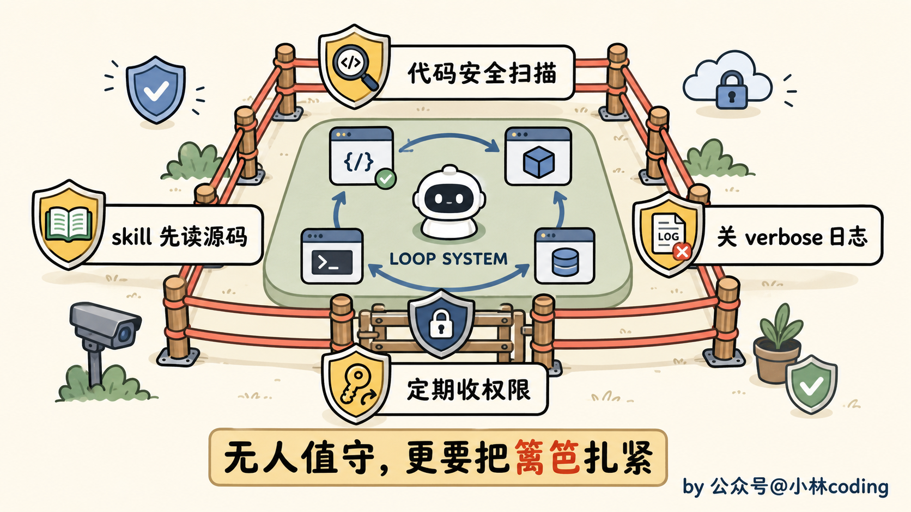
最后：14 步清单带走
讲了这么多，我把 Codez 这份手册的 14 步原样给你列一遍，分三段，你照着走就行。
第一段 · 先搞清楚要不要做
- 想明白本质：你要做的不是 prompt agent，是设计那个替你 prompt 的系统
- 过一遍四条件：活够重复、验证能自动、token 扛得住浪费、agent 有日志能跑自己写的代码
- 算清经济账：loop 偏向花得起钱的人，看清自己是受益那类还是该躲那类
- 对着具体任务跑 30 秒清单：每周至少干一次、有 gate 能拒坏活、agent 跑得了代码、有硬性 stop、不可逆操作前有人把关
第二段 · 五个构件（概念见上一篇，这里只点名）
- 自动化：给 loop 一个按节奏或事件触发的心跳
- worktree：多 agent 并行各给一份独立工作区，别让它们改同一个文件
- skill：把项目背景写成 SKILL.md，省得每轮重讲
- connector：用 MCP 接上 GitHub、Linear、Slack 这些真实工具
- sub-agent：写代码的和验收的拆成两个，别让它给自己打分
第三段 · 要么搭对，要么别搭
- 加状态文件：让 loop 接着昨天干，而不是每天从零开始
- 先搭最小可用版：一个自动化、一个 skill、一个状态文件、一道闸门，按「手动跑稳→做成 skill→包成 loop→再调度」的顺序来
- 防 Ralph Wiggum loop：用客观的 gate（测试过没过）判断完成，别让 agent 自己喊一声「干完了」就退。这个失败模式是工程师 Geoffrey Huntley 命名的，没有硬 gate，loop 会半途装完工，还在那儿空烧钱
- 还掉理解债：坚持读 diff、抽查闸门、别让 loop 碰架构
- 交安全税：代码上线前加安全扫描、skill 装前审源、生产关 verbose、权限每 30 天复审
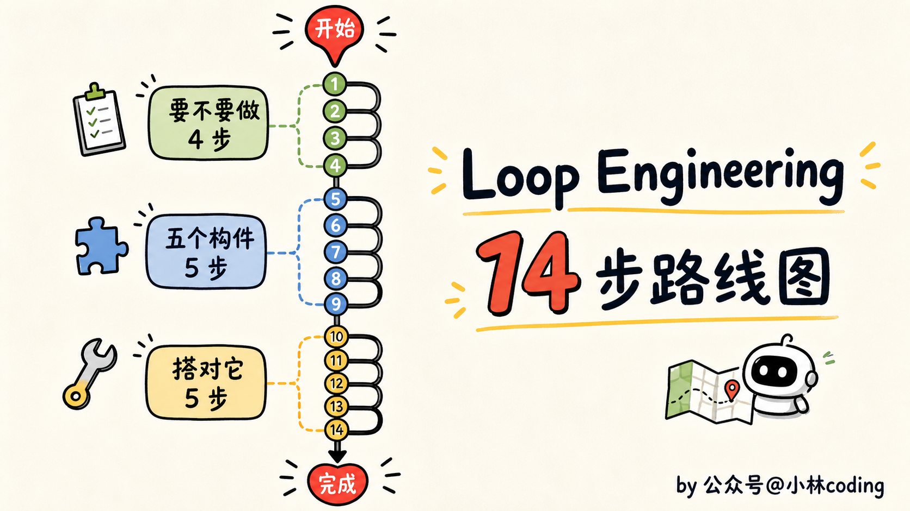
你回头看这 14 步会发现，真正难的根本不在中间搭建那段，构件工具早帮你备好了。难的是头一段的「要不要做」和尾一段的「守不守得住」，全是关于人的判断。
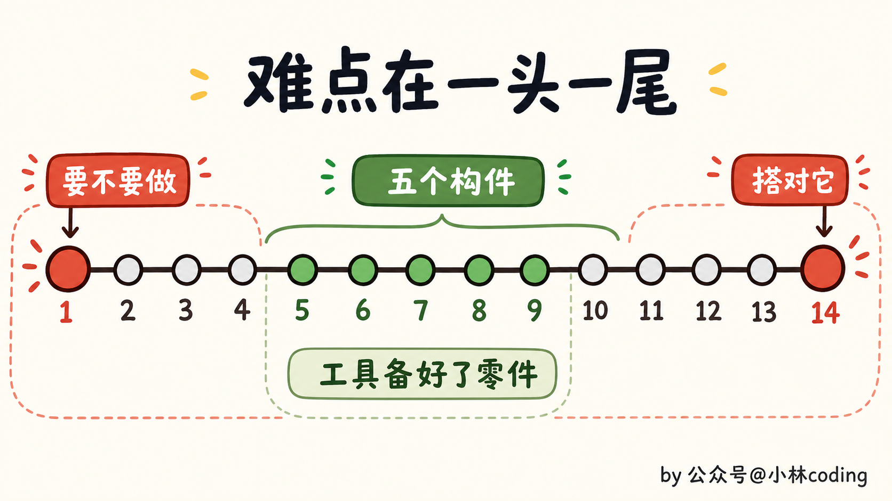
这两年，我们跟编码 agent 打交道，力气一直花在 prompt 上：把提示词写得更漂亮，把上下文喂得更全，盼着它一把就给你出个好结果。
但这条路现在差不多走到头了，真正的支点往上挪了一层，挪到了那个替你拿主意的系统身上，是它在决定 agent 做什么、什么时候做、要过哪道关、做完留下什么。
Codez 那份手册结尾就一句话，我觉得是整篇最该带走的：杠杆移走了，你的活也跟着变了，但你别把自己也一起交出去。Build the loop, stay the engineer，去把 loop 搭起来，但人还得是那个工程师。
说到底，把 loop 搭起来只是拿了张入场券。
至于到头来它是帮了你、还是坑了你，就看一件事：你愿不愿意一直盯着那份 diff，守住自己的判断。
工具替你跑，但别替你想。
我们下一篇见。
参考资料：
- Codez（@0xCodez）《Loop engineering: the 14-step roadmap from prompter to loop designer》：https://x.com/0xCodez/status/2064374643729773029